Você já reparou em filmes ou naquelas séries policiais que para investigar se existe algum vestígio de sangue na cena de um crime, os peritos utilizam uma substância que revela sangue onde não dava para ver? Não, ninguém fez mágica, apenas foram usados conhecimentos de química! Ficou curioso para ver como funciona? Vou explicar...

A reação entre a hemoglobina e o luminol é uma reação de oxidação, onde o luminol perde átomos de nitrogênio e hidrogênio e adquire átomos de oxigênio, formando um novo composto em um estado de energia mais elevado, o 3-aminoftalato como representado na reação abaixo:
Quando os elétrons retornam para um nível de energia menor, a energia liberada é emitida em forma de fóton de luz, que dá a cor azul e revela os vestígios de sangue como vemos na imagem abaixo: